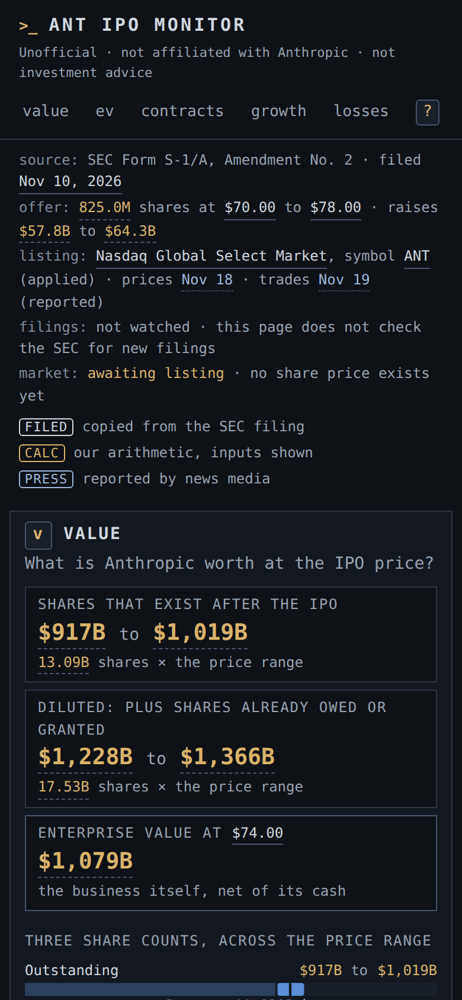
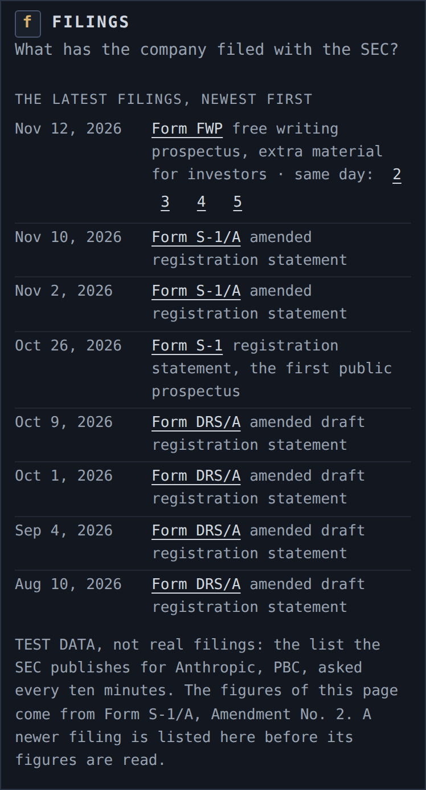
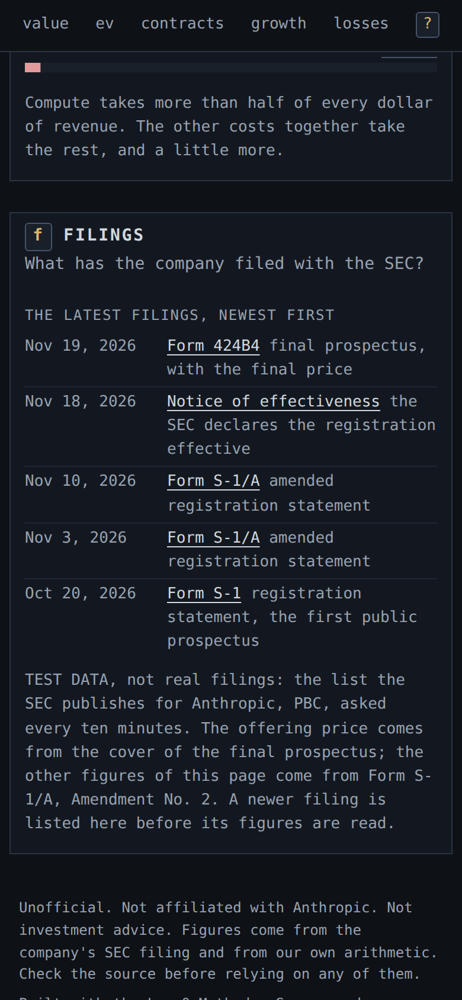
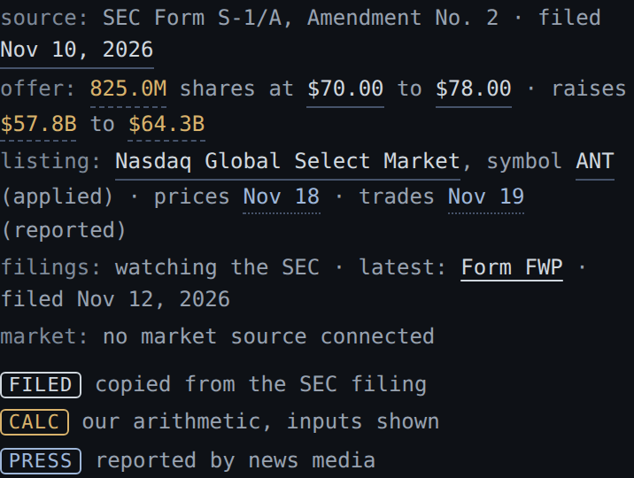

Loop 003 — Filings found without anyone asking, the final price read from the prospectus, and a repository that explains itself
2026-11-16 · The first step towards a dashboard that keeps itself current: the service can watch the SEC's list of filings and read the final IPO price from the cover of the final prospectus, and the repository now says how the whole system works. The watch is built and switched off: it waits for a contact address that only the owner can provide. Versions 0.4.0 to 0.4.2, live at agmgd-on-ipo-monitor-ba4eccd0.fly.dev.
Why
So we would now be at the point of automating the dashboard and making it autonomous?
OK, go. Do you have any blockers?
Also, the public GitHub repository should be well documented. Put the link, the workflows and so on.
Where are the AI processes and what is their part? Do we use the OpenAI API, or do you do everything and then publish? Document well how the system works, directly in the repository.
The owner spoke in French; these are their words reworded in English at their request, with the meaning unchanged. Asked whether a version whose checks all pass may go live without them, the owner answered: "Yes, deploy on your own."
What changed
- A filings watch. Every ten minutes the service can ask the SEC's EDGAR what the company has filed. The page gets a "filings" line at the top and a FILINGS panel: the latest filings in plain words, each linked to sec.gov. A prospectus newer than the one the page reads is announced on the first screen of a phone.
- The final price, read by the service. When a final prospectus appears, the offering price is read from its cover and the page switches to it, as a FILED number whose card quotes the cover. It is taken only if the cover names the company, is not preliminary, gives dollars and cents, states a total equal to that price times the shares on the same cover, and is not far from the filed range. Otherwise nothing is taken and the page says the prospectus is filed and not read yet.
- Only that one figure. Everything else in a new filing still waits for an extraction reviewed by hand. After the final prospectus the page will use the final price with share counts and cash from Amendment No. 2, and say so.
- The watch cannot break the page. If the page cannot be drawn with what the filing list brought, it is drawn without it. The figures and the market panel never depend on the SEC answering.
- A contact address that stays private. The SEC asks automated clients to say who they are. The address is sent to sec.gov hosts only, is never logged and never shown; a test proves it. On the machine it lives in a root-only file that the owner types.
- A repository that explains itself.
HOW-IT-WORKS.mdtells the system in plain language: the path of a figure, who does what, the GitHub workflows one by one, what runs by itself. The README became a front page with the live link, status badges and current screenshots. - Where AI is involved, in writing. The live service runs no AI model and calls no AI service. AI is involved at build time: the code, the tests, the extraction rules and the documents are written by a coding agent directed by the owner. The document also says that this agent is made by the company the dashboard is about.




Checks
| Check | Result | Notes |
|---|---|---|
| Format, lint, strict types | passed | No issue in 28 source files. Also green in GitHub Actions. |
| Unit tests | passed | 110. Fifteen are new: the list of filings, what counts as a newer filing, the price on a cover and eight refusals, a cover read once, the SEC not answering, the contact address. |
| Real-browser tests, local | passed | 13 in Chromium. One is new: a phone after a final prospectus (notice on the first screen, the price card quotes the cover, no sideways scroll, no serious accessibility issue). |
| Real-browser tests against the live site | passed | After the 0.4.0 and the 0.4.1 deployments. |
| A real answer of EDGAR for the registrant | passed | Read on 2026-11-16 through a web fetch tool, reduced to the columns the reader uses, replayed by the tests. Fourteen filings; it has the shape the reader was written for. |
| The price reader on the real cover of Amendment No. 2 | passed | Refused as it should be: preliminary, price blank. Read correctly once the same cover is made final with an invented price. |
| The contact address is in no log and on no page | passed | A test starts the service with an address, makes the SEC refuse, and searches the page, the health answer and every log line. |
| Screenshots at 360, 390, 430 and 1280 px, looked at one by one | passed | They showed five identical lines for five documents filed the same day: grouped on one line in 0.4.2. |
| GitHub Actions: CI and CodeQL on the released commits | passed | Commits f573d82, 7ab56f4 and 80e6257. |
| Links of README, HOW-IT-WORKS, CONTRIBUTING and the project documents | passed | Every relative link exists, every web link answers. |
| The service's own client against the real EDGAR, with the contact address | not_run | The address is the owner's and is not on the machine. The live page says "not watched". |
| The price read from a real final prospectus of another, recently listed company | not_run | Needs the raw document from sec.gov, which needs the address. |
| The About box of the GitHub repository | not_run | The agent's GitHub access cannot change repository settings. The owner has the two values to paste. |
| The owner looks at the page on a phone; the 60-second test of Loop 001 | not_run | Only the owner can run them. Carried over again. |
Departures from the mission
- The mission asked for the watch to be shown working on the live site. It is live and off: nothing can be asked from the SEC without the owner's address.
- The mission asked for a real final prospectus of another company in the tests. Not done, for the same reason.
- The owner asked, after the mission was saved, where AI is involved and to document how the system works in the repository. Done in
HOW-IT-WORKS.mdand recorded as decision D-026. - An address that is not one e-mail address switches the watch off instead of stopping the service, unlike every other setting: a typing mistake in an optional secret must not take the page down (D-025).
- The boot loop of the machine was restarted once by hand so that it reads the secrets file. The site was unreachable for a few seconds, as at each of the four deployments of this loop.
What is left
- The owner puts the contact address on the machine (one command, in
INFRASTRUCTURE.md). Then the watch is checked live against EDGAR. - The owner fills the About box of the repository, confirms or rejects decisions D-017 to D-025, and looks at the page on a phone.
- The Nasdaq source after the close and at night; the final IPO price when it is public (reported for 2026-11-18); the first trade (reported for 2026-11-19).
- After the first trade: deployment by GitHub itself, alerts, a history of prices. The full list is in
BACKLOG.md.